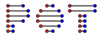

POT: Python Optimal Transport
{kind=link}
Contents
POT: Python Optimal Transport


This open source Python library provide several solvers for optimization problems related to Optimal Transport for signal, image processing and machine learning.
Website and documentation: https://PythonOT.github.io/
Source Code (MIT): https://github.com/PythonOT/POT
POT provides the following generic OT solvers (links to examples):
OT Network Simplex solver for the linear program/ Earth Movers Distance [1] .
Conditional gradient [6] and Generalized conditional gradient for regularized OT [7].
Entropic regularization OT solver with Sinkhorn Knopp Algorithm [2] , stabilized version [9] [10] [34], greedy Sinkhorn [22] and Screening Sinkhorn [26] .
Bregman projections for Wasserstein barycenter [3], convolutional barycenter [21] and unmixing [4].
Sinkhorn divergence [23] and entropic regularization OT from empirical data.
Debiased Sinkhorn barycenters Sinkhorn divergence barycenter [37]
Smooth optimal transport solvers (dual and semi-dual) for KL and squared L2 regularizations [17].
Weak OT solver between empirical distributions [39]
Non regularized Wasserstein barycenters [16] with LP solver (only small scale).
Gromov-Wasserstein distances and GW barycenters (exact [13] and regularized [12,51]), differentiable using gradients from Graph Dictionary Learning [38]
Fused-Gromov-Wasserstein distances solver and FGW barycenters (exact [24] and regularized [12,51]).
Stochastic solver and differentiable losses for Large-scale Optimal Transport (semi-dual problem [18] and dual problem [19])
Sampled solver of Gromov Wasserstein for large-scale problem with any loss functions [33]
Non regularized free support Wasserstein barycenters [20].
One dimensional Unbalanced OT with KL relaxation and barycenter [10, 25]. Also exact unbalanced OT with KL and quadratic regularization and the regularization path of UOT [41]
Partial Wasserstein and Gromov-Wasserstein (exact [29] and entropic [3] formulations).
Sliced Wasserstein [31, 32] and Max-sliced Wasserstein [35] that can be used for gradient flows [36].
Wasserstein distance on the circle [44, 45]
Semi-relaxed (Fused) Gromov-Wasserstein divergences (exact and regularized [48]).
Efficient Discrete Multi Marginal Optimal Transport Regularization [50].
Several backends for easy use of POT with Pytorch/jax/Numpy/Cupy/Tensorflow arrays.
POT provides the following Machine Learning related solvers:
Optimal transport for domain adaptation with group lasso regularization, Laplacian regularization [5] [30] and semi supervised setting.
Linear OT mapping [14] and Joint OT mapping estimation [8].
Wasserstein Discriminant Analysis [11] (requires autograd + pymanopt).
JCPOT algorithm for multi-source domain adaptation with target shift [27].
Graph Neural Network OT layers TFGW [52] and TW (OT-GNN) [53]
Some other examples are available in the documentation.
Using and citing the toolbox
If you use this toolbox in your research and find it useful, please cite POT using the following reference from our JMLR paper:
Rémi Flamary, Nicolas Courty, Alexandre Gramfort, Mokhtar Z. Alaya, Aurélie Boisbunon, Stanislas Chambon, Laetitia Chapel, Adrien Corenflos, Kilian Fatras, Nemo Fournier, Léo Gautheron, Nathalie T.H. Gayraud, Hicham Janati, Alain Rakotomamonjy, Ievgen Redko, Antoine Rolet, Antony Schutz, Vivien Seguy, Danica J. Sutherland, Romain Tavenard, Alexander Tong, Titouan Vayer,
POT Python Optimal Transport library,
Journal of Machine Learning Research, 22(78):1−8, 2021.
Website: https://pythonot.github.io/
In Bibtex format:
@article{flamary2021pot,
author = {R{\'e}mi Flamary and Nicolas Courty and Alexandre Gramfort and Mokhtar Z. Alaya and Aur{\'e}lie Boisbunon and Stanislas Chambon and Laetitia Chapel and Adrien Corenflos and Kilian Fatras and Nemo Fournier and L{\'e}o Gautheron and Nathalie T.H. Gayraud and Hicham Janati and Alain Rakotomamonjy and Ievgen Redko and Antoine Rolet and Antony Schutz and Vivien Seguy and Danica J. Sutherland and Romain Tavenard and Alexander Tong and Titouan Vayer},
title = {POT: Python Optimal Transport},
journal = {Journal of Machine Learning Research},
year = {2021},
volume = {22},
number = {78},
pages = {1-8},
url = {http://jmlr.org/papers/v22/20-451.html}
}
Installation
The library has been tested on Linux, MacOSX and Windows. It requires a C++ compiler for building/installing the EMD solver and relies on the following Python modules:
Numpy (>=1.16)
Scipy (>=1.0)
Cython (>=0.23) (build only, not necessary when installing from pip or conda)
Pip installation
You can install the toolbox through PyPI with:
pip install POT
or get the very latest version by running:
pip install -U https://github.com/PythonOT/POT/archive/master.zip # with --user for user install (no root)
Anaconda installation with conda-forge
If you use the Anaconda python distribution, POT is available in conda-forge. To install it and the required dependencies:
conda install -c conda-forge pot
Post installation check
After a correct installation, you should be able to import the module without errors:
import ot
Note that for easier access the module is named ot instead of pot.
Dependencies
Some sub-modules require additional dependencies which are discussed below
ot.dr (Wasserstein dimensionality reduction) depends on autograd and pymanopt that can be installed with:
pip install pymanopt autograd
Examples
Short examples
Import the toolbox
import ot
Compute Wasserstein distances
# a,b are 1D histograms (sum to 1 and positive)
# M is the ground cost matrix
Wd = ot.emd2(a, b, M) # exact linear program
Wd_reg = ot.sinkhorn2(a, b, M, reg) # entropic regularized OT
# if b is a matrix compute all distances to a and return a vector
Compute OT matrix
# a,b are 1D histograms (sum to 1 and positive)
# M is the ground cost matrix
T = ot.emd(a, b, M) # exact linear program
T_reg = ot.sinkhorn(a, b, M, reg) # entropic regularized OT
Compute Wasserstein barycenter
# A is a n*d matrix containing d 1D histograms
# M is the ground cost matrix
ba = ot.barycenter(A, M, reg) # reg is regularization parameter
Examples and Notebooks
The examples folder contain several examples and use case for the library. The full documentation with examples and output is available on https://PythonOT.github.io/.
Acknowledgements
This toolbox has been created and is maintained by
The numerous contributors to this library are listed here.
POT has benefited from the financing or manpower from the following partners:


Contributions and code of conduct
Every contribution is welcome and should respect the contribution guidelines. Each member of the project is expected to follow the code of conduct.
Support
You can ask questions and join the development discussion:
On the POT slack channel
On the POT gitter channel
On the POT mailing list
You can also post bug reports and feature requests in Github issues. Make sure to read our guidelines first.
References
[1] Bonneel, N., Van De Panne, M., Paris, S., & Heidrich, W. (2011, December). Displacement interpolation using Lagrangian mass transport. In ACM Transactions on Graphics (TOG) (Vol. 30, No. 6, p. 158). ACM.
[2] Cuturi, M. (2013). Sinkhorn distances: Lightspeed computation of optimal transport. In Advances in Neural Information Processing Systems (pp. 2292-2300).
[3] Benamou, J. D., Carlier, G., Cuturi, M., Nenna, L., & Peyré, G. (2015). Iterative Bregman projections for regularized transportation problems. SIAM Journal on Scientific Computing, 37(2), A1111-A1138.
[4] S. Nakhostin, N. Courty, R. Flamary, D. Tuia, T. Corpetti, Supervised planetary unmixing with optimal transport, Workshop on Hyperspectral Image and Signal Processing : Evolution in Remote Sensing (WHISPERS), 2016.
[5] N. Courty; R. Flamary; D. Tuia; A. Rakotomamonjy, Optimal Transport for Domain Adaptation, in IEEE Transactions on Pattern Analysis and Machine Intelligence , vol.PP, no.99, pp.1-1
[6] Ferradans, S., Papadakis, N., Peyré, G., & Aujol, J. F. (2014). Regularized discrete optimal transport. SIAM Journal on Imaging Sciences, 7(3), 1853-1882.
[7] Rakotomamonjy, A., Flamary, R., & Courty, N. (2015). Generalized conditional gradient: analysis of convergence and applications. arXiv preprint arXiv:1510.06567.
[8] M. Perrot, N. Courty, R. Flamary, A. Habrard (2016), Mapping estimation for discrete optimal transport, Neural Information Processing Systems (NIPS).
[9] Schmitzer, B. (2016). Stabilized Sparse Scaling Algorithms for Entropy Regularized Transport Problems. arXiv preprint arXiv:1610.06519.
[10] Chizat, L., Peyré, G., Schmitzer, B., & Vialard, F. X. (2016). Scaling algorithms for unbalanced transport problems. arXiv preprint arXiv:1607.05816.
[11] Flamary, R., Cuturi, M., Courty, N., & Rakotomamonjy, A. (2016). Wasserstein Discriminant Analysis. arXiv preprint arXiv:1608.08063.
[12] Gabriel Peyré, Marco Cuturi, and Justin Solomon (2016), Gromov-Wasserstein averaging of kernel and distance matrices International Conference on Machine Learning (ICML).
[13] Mémoli, Facundo (2011). Gromov–Wasserstein distances and the metric approach to object matching. Foundations of computational mathematics 11.4 : 417-487.
[14] Knott, M. and Smith, C. S. (1984).On the optimal mapping of distributions, Journal of Optimization Theory and Applications Vol 43.
[15] Peyré, G., & Cuturi, M. (2018). Computational Optimal Transport .
[16] Agueh, M., & Carlier, G. (2011). Barycenters in the Wasserstein space. SIAM Journal on Mathematical Analysis, 43(2), 904-924.
[17] Blondel, M., Seguy, V., & Rolet, A. (2018). Smooth and Sparse Optimal Transport. Proceedings of the Twenty-First International Conference on Artificial Intelligence and Statistics (AISTATS).
[18] Genevay, A., Cuturi, M., Peyré, G. & Bach, F. (2016) Stochastic Optimization for Large-scale Optimal Transport. Advances in Neural Information Processing Systems (2016).
[19] Seguy, V., Bhushan Damodaran, B., Flamary, R., Courty, N., Rolet, A.& Blondel, M. Large-scale Optimal Transport and Mapping Estimation. International Conference on Learning Representation (2018)
[20] Cuturi, M. and Doucet, A. (2014) Fast Computation of Wasserstein Barycenters. International Conference in Machine Learning
[21] Solomon, J., De Goes, F., Peyré, G., Cuturi, M., Butscher, A., Nguyen, A. & Guibas, L. (2015). Convolutional wasserstein distances: Efficient optimal transportation on geometric domains. ACM Transactions on Graphics (TOG), 34(4), 66.
[22] J. Altschuler, J.Weed, P. Rigollet, (2017) Near-linear time approximation algorithms for optimal transport via Sinkhorn iteration, Advances in Neural Information Processing Systems (NIPS) 31
[23] Aude, G., Peyré, G., Cuturi, M., Learning Generative Models with Sinkhorn Divergences, Proceedings of the Twenty-First International Conference on Artificial Intelligence and Statistics, (AISTATS) 21, 2018
[24] Vayer, T., Chapel, L., Flamary, R., Tavenard, R. and Courty, N. (2019). Optimal Transport for structured data with application on graphs Proceedings of the 36th International Conference on Machine Learning (ICML).
[25] Frogner C., Zhang C., Mobahi H., Araya-Polo M., Poggio T. (2015). Learning with a Wasserstein Loss Advances in Neural Information Processing Systems (NIPS).
[26] Alaya M. Z., Bérar M., Gasso G., Rakotomamonjy A. (2019). Screening Sinkhorn Algorithm for Regularized Optimal Transport, Advances in Neural Information Processing Systems 33 (NeurIPS).
[27] Redko I., Courty N., Flamary R., Tuia D. (2019). Optimal Transport for Multi-source Domain Adaptation under Target Shift, Proceedings of the Twenty-Second International Conference on Artificial Intelligence and Statistics (AISTATS) 22, 2019.
[28] Caffarelli, L. A., McCann, R. J. (2010). Free boundaries in optimal transport and Monge-Ampere obstacle problems, Annals of mathematics, 673-730.
[29] Chapel, L., Alaya, M., Gasso, G. (2020). Partial Optimal Transport with Applications on Positive-Unlabeled Learning, Advances in Neural Information Processing Systems (NeurIPS), 2020.
[30] Flamary R., Courty N., Tuia D., Rakotomamonjy A. (2014). Optimal transport with Laplacian regularization: Applications to domain adaptation and shape matching, NIPS Workshop on Optimal Transport and Machine Learning OTML, 2014.
[31] Bonneel, Nicolas, et al. Sliced and radon wasserstein barycenters of measures, Journal of Mathematical Imaging and Vision 51.1 (2015): 22-45
[32] Huang, M., Ma S., Lai, L. (2021). A Riemannian Block Coordinate Descent Method for Computing the Projection Robust Wasserstein Distance, Proceedings of the 38th International Conference on Machine Learning (ICML).
[33] Kerdoncuff T., Emonet R., Marc S. Sampled Gromov Wasserstein, Machine Learning Journal (MJL), 2021
[34] Feydy, J., Séjourné, T., Vialard, F. X., Amari, S. I., Trouvé, A., & Peyré, G. (2019, April). Interpolating between optimal transport and MMD using Sinkhorn divergences. In The 22nd International Conference on Artificial Intelligence and Statistics (pp. 2681-2690). PMLR.
[35] Deshpande, I., Hu, Y. T., Sun, R., Pyrros, A., Siddiqui, N., Koyejo, S., … & Schwing, A. G. (2019). Max-sliced wasserstein distance and its use for gans. In Proceedings of the IEEE/CVF Conference on Computer Vision and Pattern Recognition (pp. 10648-10656).
[36] Liutkus, A., Simsekli, U., Majewski, S., Durmus, A., & Stöter, F. R. (2019, May). Sliced-Wasserstein flows: Nonparametric generative modeling via optimal transport and diffusions. In International Conference on Machine Learning (pp. 4104-4113). PMLR.
[37] Janati, H., Cuturi, M., Gramfort, A. Debiased sinkhorn barycenters Proceedings of the 37th International Conference on Machine Learning, PMLR 119:4692-4701, 2020
[38] C. Vincent-Cuaz, T. Vayer, R. Flamary, M. Corneli, N. Courty, Online Graph Dictionary Learning, International Conference on Machine Learning (ICML), 2021.
[39] Gozlan, N., Roberto, C., Samson, P. M., & Tetali, P. (2017). Kantorovich duality for general transport costs and applications. Journal of Functional Analysis, 273(11), 3327-3405.
[40] Forrow, A., Hütter, J. C., Nitzan, M., Rigollet, P., Schiebinger, G., & Weed, J. (2019, April). Statistical optimal transport via factored couplings. In The 22nd International Conference on Artificial Intelligence and Statistics (pp. 2454-2465). PMLR.
[41] Chapel*, L., Flamary*, R., Wu, H., Févotte, C., Gasso, G. (2021). Unbalanced Optimal Transport through Non-negative Penalized Linear Regression Advances in Neural Information Processing Systems (NeurIPS), 2020. (Two first co-authors)
[42] Delon, J., Gozlan, N., and Saint-Dizier, A. Generalized Wasserstein barycenters between probability measures living on different subspaces. arXiv preprint arXiv:2105.09755, 2021.
[43] Álvarez-Esteban, Pedro C., et al. A fixed-point approach to barycenters in Wasserstein space. Journal of Mathematical Analysis and Applications 441.2 (2016): 744-762.
[44] Delon, Julie, Julien Salomon, and Andrei Sobolevski. Fast transport optimization for Monge costs on the circle. SIAM Journal on Applied Mathematics 70.7 (2010): 2239-2258.
[45] Hundrieser, Shayan, Marcel Klatt, and Axel Munk. The statistics of circular optimal transport. Directional Statistics for Innovative Applications: A Bicentennial Tribute to Florence Nightingale. Singapore: Springer Nature Singapore, 2022. 57-82.
[46] Bonet, C., Berg, P., Courty, N., Septier, F., Drumetz, L., & Pham, M. T. (2023). Spherical Sliced-Wasserstein. International Conference on Learning Representations.
[47] Chowdhury, S., & Mémoli, F. (2019). The gromov–wasserstein distance between networks and stable network invariants. Information and Inference: A Journal of the IMA, 8(4), 757-787.
[48] Cédric Vincent-Cuaz, Rémi Flamary, Marco Corneli, Titouan Vayer, Nicolas Courty (2022). Semi-relaxed Gromov-Wasserstein divergence and applications on graphs. International Conference on Learning Representations (ICLR), 2022.
[49] Redko, I., Vayer, T., Flamary, R., and Courty, N. (2020). CO-Optimal Transport. Advances in Neural Information Processing Systems, 33.
[50] Liu, T., Puigcerver, J., & Blondel, M. (2023). Sparsity-constrained optimal transport. Proceedings of the Eleventh International Conference on Learning Representations (ICLR).
[51] Xu, H., Luo, D., Zha, H., & Duke, L. C. (2019). Gromov-wasserstein learning for graph matching and node embedding. In International Conference on Machine Learning (ICML), 2019.
[52] Collas, A., Vayer, T., Flamary, F., & Breloy, A. (2023). Entropic Wasserstein Component Analysis. ArXiv.
[53] C. Vincent-Cuaz, R. Flamary, M. Corneli, T. Vayer, N. Courty (2022). Template based graph neural network with optimal transport distances. Advances in Neural Information Processing Systems, 35.
[54] Bécigneul, G., Ganea, O. E., Chen, B., Barzilay, R., & Jaakkola, T. S. (2020). Optimal transport graph neural networks.
[55] Ronak Mehta, Jeffery Kline, Vishnu Suresh Lokhande, Glenn Fung, & Vikas Singh (2023). Efficient Discrete Multi Marginal Optimal Transport Regularization. In The Eleventh International Conference on Learning Representations (ICLR).
[56] Jeffery Kline. Properties of the d-dimensional earth mover’s problem. Discrete Applied Mathematics, 265: 128–141, 2019.